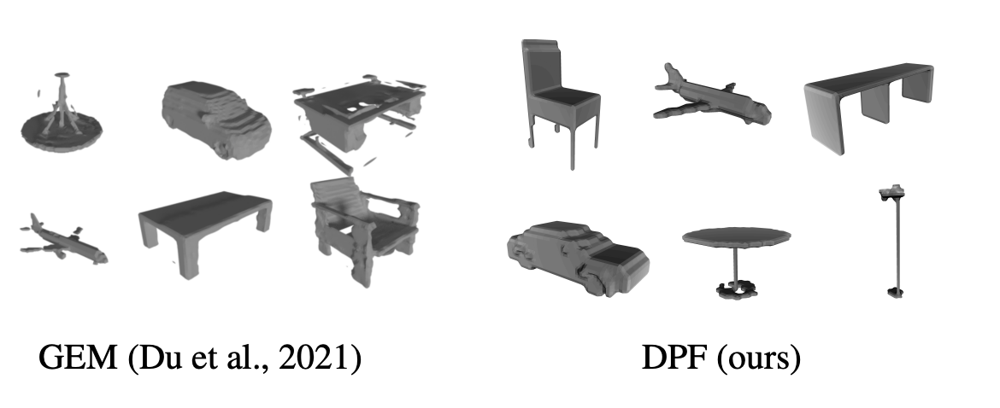
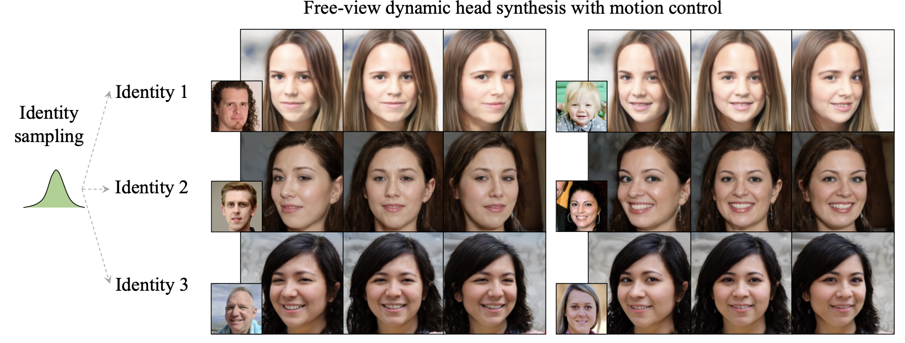
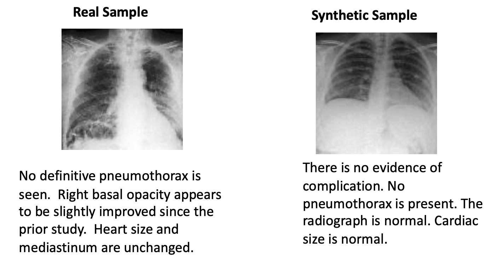
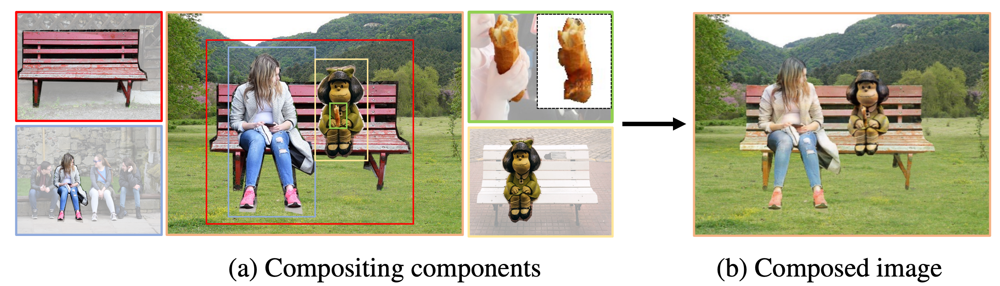
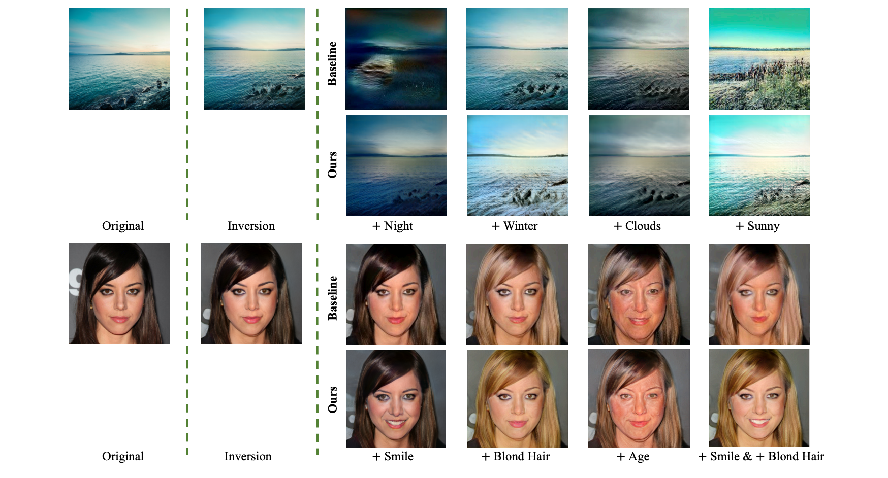
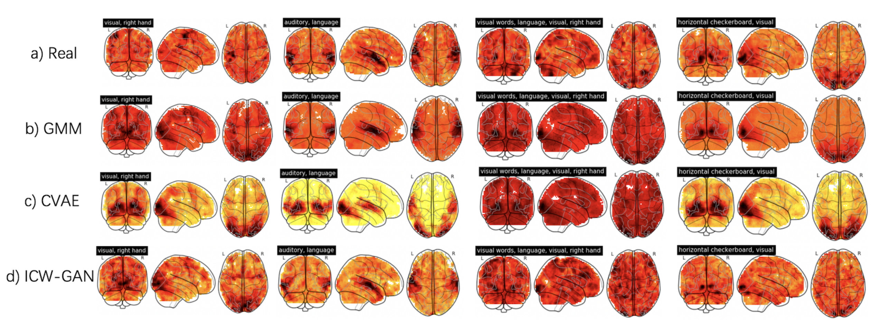
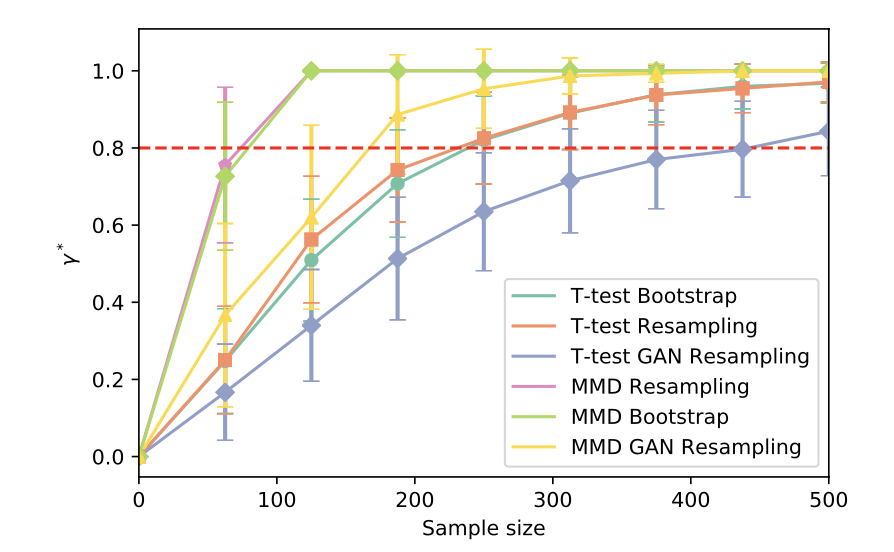
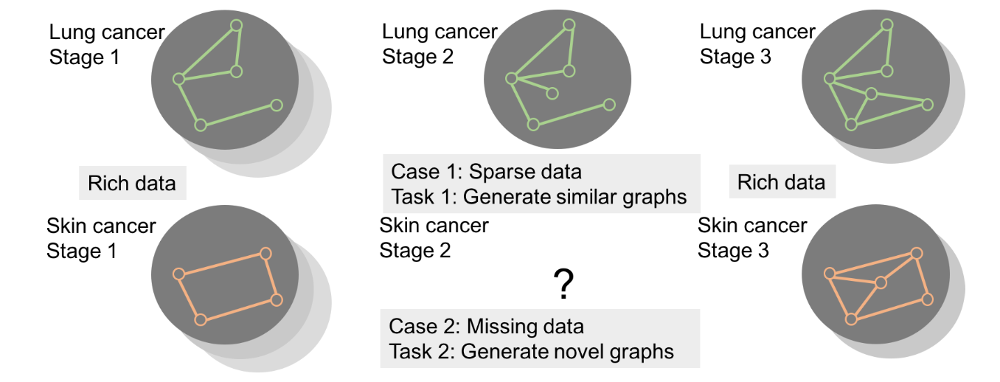

3D & 4D Generation · Video Models · Interactive Worlds
Agentic Creation for 3D, 4D & Games (cooking 🔧)
Featured project · Roblox · 2026
Roblox Reality
Video models as an AI renderer for interactive 3D worlds.
The game engine provides world structure and game logic; a video model transforms its output into richer visuals. Creator control guides the appearance, style, and freedom of the generative renderer.
C2R: Coarse-to-Real (NeurIPS 2026)
Generating realistic urban crowd videos from coarse 3D simulations, with control over scene layout, camera motion, human trajectories, and appearance.
CubePart: An Open-Vocabulary Part-Controllable 3D Generator (SIGGRAPH 2026)
Generate coherent 3D assets with user-specified semantic parts, ready for animation and scripted behaviors.
T2Bs: Text-to-Character Blendshapes via Video Generation (ICCV 2025)
Turning text into expressive, animatable 3D character heads by combining 3D generation with video diffusion.
UniPhy: Learning a Unified Constitutive Model for Inverse Physics Simulation (CVPR 2025)
Infer material properties from observed motion, then re-simulate objects under new conditions with a shared neural material model.
PrEditor3D: Fast and Precise 3D Shape Editing (CVPR 2025)
Fast, localized 3D mesh editing from text and rough masks, while preserving regions outside the edit.
4Real-Video: Learning Generalizable Photo-Realistic 4D Video Diffusion (CVPR 2025)
A large-scale video diffusion model that can generate 4D video grids in a feed-forward manner.
GTR: Improving Large 3D Reconstruction Models through Geometry and Texture Refinement (ICLR 2025)
Reconstructing detailed 3D meshes from multi-view images with improved geometry and texture.
DELTA: Dense Efficient Long-range 3D Tracking for any video (ICLR 2025)
Dense, per-pixel 3D tracking from monocular videos.
Cube: A Roblox View of 3D Intelligence (Technical report · 2025)
A foundation-model approach to 3D intelligence, connecting shape generation, scene understanding, and reasoning.
4Real: Towards Photorealistic 4D Scene Generation via Video Diffusion Models (NeurIPS 2024)
The first photorealistic text-to-4D scene generation pipeline, with the use of video diffusion models.
SceneWiz3D: Towards Text-guided 3D Scene Composition (CVPR 2024)
High-fidelity 3D scene generation from text.
HiFA: High-fidelity Text-to-3D Generation with Advanced Diffusion Guidance (ICLR 2024)
A high-fidelity text-to-3D generation model with pretrained text-to-image models as prior.
AToM: Amortized Text-to-Mesh using 2D Diffusion (Preprint · 2024)
Feed-forward generation of textured meshes from text, using amortized optimization with 2D diffusion priors.
Diffusion Priors for Dynamic View Synthesis from Monocular Videos (Preprint · 2024)
Reconstructing dynamic scenes and synthesizing unseen views from a single video using RGB-D diffusion priors.
Diffusion Probabilistic Fields (ICLR 2023)

A diffusion model that learns distributions over continuous functions defined over metric spaces as fields.
Controllable radiance fields for dynamic face synthesis (3DV 2022)

A Controllable Radiance Field that can generate dynamic faces and human bodies with user control.
EMIXER: End-to-end Multimodal X-ray Generation via Self-supervision (MLHC 2022)

A multi-modal X-ray generative model that is trained in a self-supervised way.
AMICO: Amodal Instance Composition (BMVC 2021)

An image composition model that can blend imperfect objects onto a target image.
Enjoy Your Editing: Controllable GANs for Image Editing via Latent Space Navigation (ICLR 2021)

A latent-space image editing work using pretrained Generative Adversarial Networks (GANs).
FMRI data augmentation via synthesis (ISBI 2019)

Synthesizing fMRI brain data with generative adversarial networks for data augmentation.
Synthetic Power Analyses: Empirical Evaluation and Application to Cognitive Neuroimaging (Asilomar 2019)

A methodological approach to improve statistical analysis in cognitive neuroimaging using generated datasets.
Conditional structure generation through graph variational generative adversarial nets (NeurIPS 2019)
